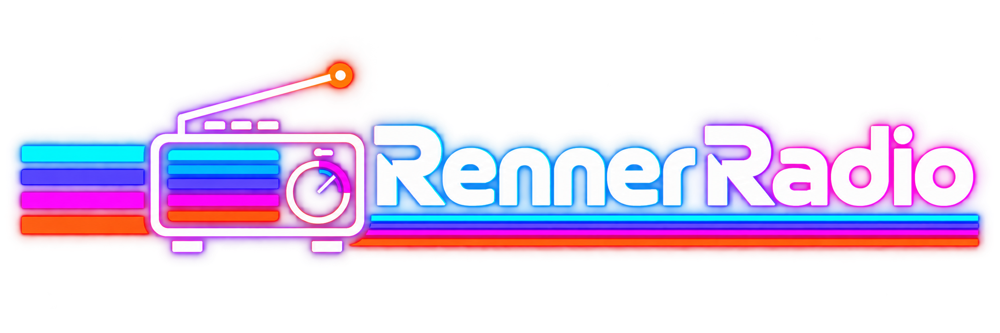

Your everyday escape. Renner Radio.
Midnight Studio00:00
YOU ARE LISTENING TO
Tuning in…
88.9FM
Choose your frequency
READY TO TUNE
THE ORIGINAL SIGNAL
From the source.
Your music, directly from its YouTube channel.
Open original stream
YOU ARE LISTENING TO
Choose your frequency
READY TO TUNE
Your music, directly from its YouTube channel.
Open original streamConnecting chat...
Quiet room. Send the first signal.
Connecting Community FM...
No Community FM channel yet. Create one with a YouTube link.